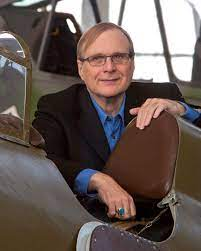
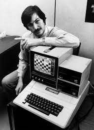

Paul Allen
Berkley
1976
Mientras tranto, Steve Jobs y Steve wozniack se presnentaron en el club de computacion "Casa de
al
cereveza" para presentar su computadora, su primera computadora, algo domestico, estaba hecho
con
una gabinete de madera, tenia un pequeño monitor, la primera maquina que tenia uno, que hasta
ese
entonces nnguno tenia uno, como el Altier 8800.
solo procesaban datos.
Luego de ser rechazados por IBM, al presentar la computadora personal, se enfocaron a
desarrollar
por su cuenta.
Las primeras computadoras de Appel Computer eran pequeñas cajas de madera hechas a mano. Se
lanzaron al mercado en 1976 bajo el nombre de Apple-1 con un valor de USD666.66
y solo se fabricaron 200 unidades.
Estaba compuesta por una placa base con unos 30 chips, que alcanzaban 1MHz de velocidad,
un teclado integrado y una carcasa de madera de Kao Hawaiano, en su momento no tubo demaciad
repercución, más allá de la atención que atrajo en el sector
tecnológico, pero su importancia fue capital entodo lo que hizo Apple después ya que sento las
bases del Apple II, el primr gran éxito de los Cupertinos.
Apple
 Fundada el 1 de abril de 1976 para comercializar computadoras de escritorio. Incorporaron la
empresa
el 3 de enero de 1977 en cupertino, California.
Fundada el 1 de abril de 1976 para comercializar computadoras de escritorio. Incorporaron la
empresa
el 3 de enero de 1977 en cupertino, California.
Abuquerque
1976
mietras tanto en aAlbuquerque, Paul Allen y Bill Gates se encontraban asentando las bases de lo
que mas tarde sería Microsoft,
Negociando contratos cn letras de
cambios, Negociando las regalias
que recibian por cada copia instalada en cada computadora.
Microsoft
 Fundada el 4 de abril de 1975, albuquerque, Nuevo Mexico, Estado Unidos.
Fundada el 4 de abril de 1975, albuquerque, Nuevo Mexico, Estado Unidos.
Abuquerque
1977
En la busqueda de un nuevo software, se topan con Apple Computers Inc., que para esa época ya se
econtraba
establecidos, se dirigieron a la feria de las computadoras en san francisco ese mismo año, donde
aple presentaba Apple II, con 62 chips, notando con gran
asombro la diferencia que exixtia entre ambas companias, esto marcaria un giro inesperado.
Apple II

Apple II y Steve Jobs
 Era un sistema operativoen disco, sirvió de base para el primero sistema operativo de uso masivo.
Los sistemas operativos consiguieron hacer funcionar los ordenadores personales mediante la lectura de datos ey el
almacenamiento de datos en disquetes.
Era un sistema operativoen disco, sirvió de base para el primero sistema operativo de uso masivo.
Los sistemas operativos consiguieron hacer funcionar los ordenadores personales mediante la lectura de datos ey el
almacenamiento de datos en disquetes.  "Teníamos la sensación de que la revolución había empezado sin nosotros"
"Teníamos la sensación de que la revolución había empezado sin nosotros"